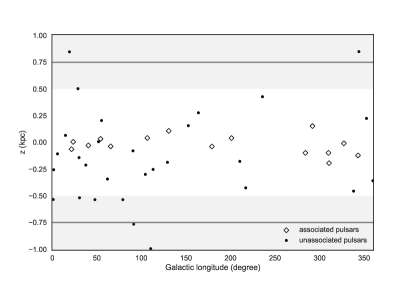
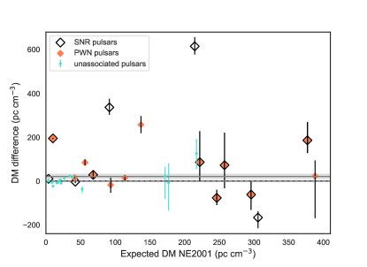
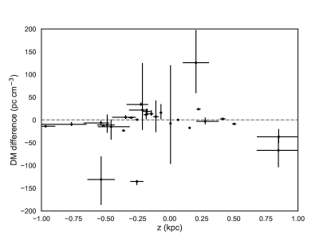
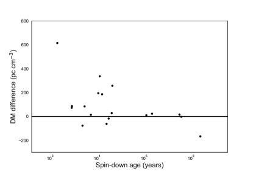

فائض تشتت صادر عن سُدُم رياح النجوم النابضة وبقايا المستعرات العظمى: الآثار المترتبة على النجوم النابضة وFRBs
تُعد النجوم النابضة الفتية وسُدُم رياح النجوم النابضة (PWNe) أو بقايا المستعرات العظمى (SNRs) التي تحيط بها من أكثر البيئات ديناميكية وارتفاعاً في القدرة في كوننا.
ومع تزايد الأرصاد الأكثر حساسية، ازداد عدد ترابطات النجم النابض مع SNR ومع PWN (ويشار إليها فيما بعد بـ SNR/PWN)،
إلا أننا لا نفهم بعد إلى أي مدى تؤثر هذه البيئة في الإشارات الراديوية النبضية الصادرة عن النجوم النابضة.
درسنا مساهمة SNRs وPWNe التشتتية في النجوم النابضة المجرية،
ونظرنا في صلتها بالاندفاعات الراديوية السريعة (FRBs) مثل FRB 121102.
استقصينا مساهمة بقايا المستعرات العظمى وسُدُم رياح النجوم النابضة في مقياس التشتت (DM) بمقارنة قيم DM المقاسة للنجوم النابضة المجرية الواقعة في SNR/PWN مع قيمة DM المتوقعة من إلكترونات الوسط بين النجمي المتداخلة وحدها، باستخدام نموذج NE2001.
نجد أن مساهمة SNRs وPWNe في DM لإشارة النجم النابض موجودة عند مستوى ثنائي- ،
وتبلغ
،
وتبلغ  pc cm-3. ولا تُظهر عينة الضبط من النجوم النابضة غير المرتبطة بـ SNR/PWN أي فائض.
نمذجنا كثافات إلكترونات SNR وPWN لكل نجم نابض فتي في عينتنا، ونبيّن أن هذه النماذج تتنبأ فعلاً بفائض بهذا المقدار.
وبالاستقراء إلى النجوم النابضة الفتية السريعة الدوران وذات المجال المغناطيسي العالي، التي قد تمد FRBs بالطاقة، نبيّن أن
SNR وPWN الخاصين بها قادران على الإسهام إسهاماً كبيراً في DM المرصود.
pc cm-3. ولا تُظهر عينة الضبط من النجوم النابضة غير المرتبطة بـ SNR/PWN أي فائض.
نمذجنا كثافات إلكترونات SNR وPWN لكل نجم نابض فتي في عينتنا، ونبيّن أن هذه النماذج تتنبأ فعلاً بفائض بهذا المقدار.
وبالاستقراء إلى النجوم النابضة الفتية السريعة الدوران وذات المجال المغناطيسي العالي، التي قد تمد FRBs بالطاقة، نبيّن أن
SNR وPWN الخاصين بها قادران على الإسهام إسهاماً كبيراً في DM المرصود.
Key Words.:
ISM: بقايا المستعرات العظمى - ISM: سُدُم رياح النجوم النابضة - النجوم النابضة: عام1 المقدمة
عندما تنتقل الإشارات الراديوية عبر بلازما، تُحدث الإلكترونات الحرة تأخيراً تشتتياً، فتبطئها تدريجياً كلما انخفضت الترددات. ويكون ذلك ملحوظاً على نحو خاص في الومضات الراديوية القصيرة التي تُنتج على هيئة انبعاث راديوي مترابط عريض النطاق في النجوم النابضة الراديوية (Hewish et al. 1968) والاندفاعات الراديوية السريعة (FRBs; Lorimer et al. 2007).
ومن خلال فصل التأخيرات التشتتية عن الآثار ذات الاعتماد الترددي المختلف (التبعثر متعدد المسارات، وتطور المظهر النبضي)، يمكن تحديد شدة التأخير. وعند التعبير عن هذا التأخير بوصفه مقياس تشتت (DM) مستقلاً عن التردد، فإنه يكشف مباشرة العدد الكلي للإلكترونات الحرة التي صادفها الاندفاع. ويتيح الجمع بين كثافة عمود الإلكترونات هذه ومسافته فهماً لمحتوى الإلكترونات والباريونات على امتداد خط البصر.
ومع وجود أكثر من 2000 خط بصر، أصبحت النجوم النابضة الآن أجراماً ممتازة للمساعدة في تحديد ظواهر مثل البنية ثلاثية الأبعاد 3 لمجرتنا. وتتبع الإلكترونات الحرة بنية الأذرع الحلزونية في مجرتنا وتوفر معلومات عن أي مناطق ناقصة الكثافة أو فائضة الكثافة. وبالاقتران مع قياسات مسافة مستقلة، مثل تلك المستخلصة من اختلاف المنظر أو من قياسات سرعة خط H i، يمكن الحصول على نموذج دقيق للمجرة.
إن النموذج الأوسع استخداماً لتوزيع الإلكترونات الحرة في المجرة، ضمن الوسط بين النجمي (ISM)، جمعه Cordes and Lazio (2002, 2003) ويُسمى NE2001. وهو يربط بين مسافات النجوم النابضة وقيم DM. ويتكون هذا النموذج الأملس من قرص سميك، وقرص حلقي رقيق، وأذرع حلزونية، ومكوّن للمركز المجري. ولحساب البنى الإضافية، أُضيفت كتل وفجوات تمثل مناطق فائضة وناقصة الكثافة: فجوات من أجل «الفقاعات الفائقة» مثلاً، وكتل للمناطق فائقة الكثافة مثل مناطق H ii، وبقايا المستعرات العظمى (SNRs)، ونجوم O.
إن قياس DM مباشر، لكن مسافات النجوم النابضة تُستحصل بطرائق متنوعة. وأكثر الطرائق شيوعاً هي قياسات اختلاف المنظر؛ والمسافات الحركية المبنية على قياسات سرعة الخط من H i، وكذلك، وإن كان ذلك أقل شيوعاً، من CO ؛ أو بالارتباط. أعاد Verbiest et al. (2012) مؤخراً تحليل المسافات الحركية المعتمدة على H i إلى النجوم النابضة باستخدام أحدث معاملات دوران المجرة. وبعد التصحيح لانحياز Lutz-Kelker ولتوزيع اللمعان الجوهري للنجوم النابضة، أتاح تحليل بيانات بايزي لـ Verbiest et al. (2012) أن يقدم قيوداً أدق على مسافات النجوم النابضة. ويمكن اتباع نهج مشابه مع FRBs. فإذا حُصل على مجموعة من الانزياحات الحمراء وفُهم التشتت المحلي في مجراتها المضيفة، أمكن أن تعمل FRBs مسباراً للوسط بين المجرّي (IGM).
والآن، في كل من النجوم النابضة وFRBs، قد تضيف البيئة القريبة من المصدر إلى محتوى الإلكترونات الحرة على امتداد خط البصر. وبخاصة للنجوم النابضة الفتية، قد يلوث DM الإضافي من سُدُم رياح النجوم النابضة (PWNe) أو SNRs علاقة DM-المسافة المبنية فقط على ISM المتداخل، وربما IGM. وفي مجرتنا، يمكّن اكتشاف مزيد من ترابطات SNR/PWN مع النجوم النابضة ذات قياسات المسافة الملائمة من تحديد مساهمة DM لـ SNRs وPWNe رصدياً. ويتيح لنا ذلك فك مساهمة الإلكترونات الحرة القريبة من المصدر إحصائياً عن مساهمات خط البصر للنجوم النابضة الفتية المكتشفة حديثاً.
وقد تكون لذلك آثار على FRBs خارج المجرية. فقد يسهم هذا في فائض DM المرصود هناك فوق المساهمة المجرية (انظر مثلاً Murase et al. 2016; Piro 2016)، وربما يساعد في اختبار النماذج ذات مساهمات DM كبيرة قرب المصدر (Pen and Connor 2015; Connor et al. 2016). ومنذ اكتشاف تكرار FRB 121102 وارتباطه بمنطقة تشكل نجوم (Tendulkar et al. 2017; Kokubo et al. 2017; Bassa et al. 2017)، تعززت الفرضية القائلة إن صنفاً من FRBs يمكن أن ينشأ من نجوم نيوترونية فتية مقيمة في بقاياها المضيفة. نهدف إلى استقصاء مساهمة DM للبيئة المباشرة للنجوم النابضة، مع SNR وPWN الخاصين بها، وتحديد ما إذا كان ذلك يستطيع تفسير فائض DM المرصود في FRBs.
2 المنهجية
2.1 اختيار المصادر
من فهرس ATNF11 1 http://www.atnf.csiro.au/research/pulsar/psrcat/ الإصدار 1.54 (Manchester et al. 2005). اخترنا كل النجوم النابضة الراديوية التي 1) ترتبط بـ SNR/PWN؛ 2) لم تُستخدم في معايرة NE2001؛ و3) لها مسافة مستقلة غير مشتقة من DM؛ مستحصلة من اختلافات المنظر، أو من قياسات سرعة خط H i أو CO، أو بالارتباط. واستُخدمت مسافات Verbiest et al. (2012) متى أمكن ذلك لزيادة تجانس العينة. وتُفصل هذه المجموعة النهائية من «النجوم النابضة المرتبطة» في الجدول 1.
أنشأنا مجموعة مقارنة من النجوم النابضة غير المرتبطة بـ SNR/PWN، والتي لم تُدرج مسافتها في معايرة NE2001.
وحرصنا على الحصول على العينتين بطريقة قابلة للمقارنة؛ إذ حُصلت المسافات باستخدام التقنيات نفسها. وبالنسبة إلى مجموعتنا غير المرتبطة اخترنا كل النجوم النابضة ذات قياسات اختلاف المنظر الجديدة من Chatterjee et al. (2009) وMatthews et al. (2016) أو قياسات سرعة خط H i الجديدة من Verbiest et al. (2012).
ولزيادة عينة النجوم النابضة غير المرتبطة ذات DM العالي ندرج خطوط بصر النجوم النابضة في العناقيد الكروية التي يقل ارتفاع مقياسها عن 1.0 kpc (انظر الشكل 1).
ومن المعروف أن نموذج NE2001 يملك تنبؤات DM أقل دقة فوق ارتفاع مقياس نمذجي واحد للقرص السميك البالغ  (Gaensler et al. 2008).
(Gaensler et al. 2008).

| J2000 | B1950 | Distance | DMobs | DMNE2001 | Association | Ref. |
|---|---|---|---|---|---|---|
| (kpc) | (pc cm-3) | (pc cm-3) | ||||
| 0205+6449 | 140.7 | PWN 3C58 | 1 | |||
| 0358+5413bb بالنسبة إلى هذه المصادر أُدرجت مسافة سابقة في نموذج NE2001، لكن البقية لم تُؤخذ في الحسبان. | 0355+54 | 57.1420 | PWN | 2 | ||
| 0538+2817 | 39.570 | SNR S147 | 3 | |||
| 0659+1414 | 0656+14 | 14.0672 | SNR Monogem Ring | 3 | ||
| 10165857 | 3aa افتُرض أن خطأ المسافة يساوي 20 (10 على H i). | 394.2 | PWN G284.3-1.8 | 4 | ||
| 11245916 | 330 | SNR G292.0+1.8 PWN | 3 | |||
| 13576429 | 128.5 | cc تُحدد قيم DM هذه من قياسات مسافة H i، ومع أن هذه الأخطاء متناظرة، فإنها تصبح غير متناظرة عند ترجمتها إلى أخطاء DM. وبناء على ذلك، تُعطى الأخطاء المعنية للحدود المقابلة. | PWN | 5 | ||
| 14006325 | 563 | cc تُحدد قيم DM هذه من قياسات مسافة H i، ومع أن هذه الأخطاء متناظرة، فإنها تصبح غير متناظرة عند ترجمتها إلى أخطاء DM. وبناء على ذلك، تُعطى الأخطاء المعنية للحدود المقابلة. | SNR G310.6-1.6 PWN | 6, 7 | ||
| 15505418 | 830 | cc تُحدد قيم DM هذه من قياسات مسافة H i، ومع أن هذه الأخطاء متناظرة، فإنها تصبح غير متناظرة عند ترجمتها إلى أخطاء DM. وبناء على ذلك، تُعطى الأخطاء المعنية للحدود المقابلة. | SNR G327.24-0.13 | 8 | ||
| 17094429 | 170644 | 75.69 | PWN G343.1-2.3 | 3 | ||
| 18032137bb بالنسبة إلى هذه المصادر أُدرجت مسافة سابقة في نموذج NE2001، لكن البقية لم تُؤخذ في الحسبان. | 180021 | 233.99 | SNR G8.7-0.1 PWN | 3 | ||
| 18330827 | 183008 | 411 | PWN | 3 | ||
| 18331034 | 4.1 | 169.5 | SNR G21.5-0.9 | 3 | ||
| 1856+0113bb بالنسبة إلى هذه المصادر أُدرجت مسافة سابقة في نموذج NE2001، لكن البقية لم تُؤخذ في الحسبان. | 1853+01 | 2.52.6 | 96.74 | cc تُحدد قيم DM هذه من قياسات مسافة H i، ومع أن هذه الأخطاء متناظرة، فإنها تصبح غير متناظرة عند ترجمتها إلى أخطاء DM. وبناء على ذلك، تُعطى الأخطاء المعنية للحدود المقابلة. | SNR PWN W44 | 9 |
| 1907+0631 | 3.4aa افتُرض أن خطأ المسافة يساوي 20 (10 على H i). | 428.6 | SNR G40.5-0.5 | 10 | ||
| 1930+1852 | 308 | SNR PWN G54.1+0.3 | 3 | |||
| 1957+2831 | aa افتُرض أن خطأ المسافة يساوي 20 (10 على H i). | 138.99 | cc تُحدد قيم DM هذه من قياسات مسافة H i، ومع أن هذه الأخطاء متناظرة، فإنها تصبح غير متناظرة عند ترجمتها إلى أخطاء DM. وبناء على ذلك، تُعطى الأخطاء المعنية للحدود المقابلة. | SNR G65.1+0.6 | 11 | |
| 2229+6114 | 0.8aa افتُرض أن خطأ المسافة يساوي 20 (10 على H i). | 204.97 | 10.15 | SNR G106.6+2.9 PWN | 12 |
(1) Kothes (2013); (2) Chatterjee et al. (2004); (3)Verbiest et al. (2012); (4) Camilo et al. (2004); (5) Danilenko et al. (2012); (6) Renaud et al. (2010); (7) Marshall et al. (2006); (8) Gelfand and Gaensler (2007); (9) Cox et al. (1999); (10) Yang et al. (2006); (11) Tian and Leahy (2006); (12) Kothes et al. (2001)
| J2000 | B1950 | Distance | DMobs | DMNE2001 | Association | Ref. |
|---|---|---|---|---|---|---|
| (kpc) | (pc cm-3) | (pc cm-3) | ||||
| 0030+0451 | 4.33252 | 2 | ||||
| 00340721 | 003107 | 10.922 | 1 | |||
| 0139+5814 | 0136+57 | 73.811 | 1 | |||
| 04521759 | 045018 | 39.903 | 1 | |||
| 0454+5543 | 0450+55 | 14.590 | 1 | |||
| 06130200 | 38.77919 | 2 | ||||
| 0645+5158 | 18.247536 | 2 | ||||
| 08201350 | 081813 | 40.938 | 1 | |||
| 16003053 | 52.3245 | 2 | ||||
| 16142230 | 34.3864 | 2 | ||||
| 1713+0747 | 15.9780 | 2 | ||||
| 17405340 | 71.8 | NGC6397 | 3 | |||
| 17441134 | 3.13695 | 2 | ||||
| 18010857ABCD | aa افتُرض أن خطأ المسافة يساوي 20. | 180.48bb تُؤخذ قيمة DM المتوسطة لهذه النجوم النابضة في العناقيد الكروية. | NGC6517 | 4 | ||
| 18033002ABC | aa افتُرض أن خطأ المسافة يساوي 20. | 193.03bb تُؤخذ قيمة DM المتوسطة لهذه النجوم النابضة في العناقيد الكروية. | NGC6522 | 5 | ||
| 18072459AB | aa افتُرض أن خطأ المسافة يساوي 20. | 135.58bb تُؤخذ قيمة DM المتوسطة لهذه النجوم النابضة في العناقيد الكروية. | NGC6544 | 6 | ||
| 18353259A | aa افتُرض أن خطأ المسافة يساوي 20. | 63.35 | NGC6652 | 7 | ||
| 19093744 | 10.3932 | 2 | ||||
| 1909+0254 | 1907+02 | 171.734 | 1 | |||
| 19180642 | 26.554 | 2 | ||||
| 1922+2100 | 1920+21 | 217.086 | 1 | |||
| 1926+1648 | 1924+16 | 176.885 | 1 | |||
| 2043+1711 | 20.70987 | 2 | ||||
| 20481616 | 204516 | 11.456 | 1 | |||
| 2055+3630 | 2053+36 | 97.4155 | 1 | |||
| 21450750 | 8.99761 | 2 | ||||
| 2157+4017 | 2154+40 | 71.1239 | 1 | |||
| 2313+4253 | 2310+42 | 17.277 | 1 | |||
| 2317+1439 | 21.8999 | 2 |
2.2 الملاءمة
نأخذ قيمة DM التي يتنبأ بها NE2001 عند مسافة كل مصدر لتكون DM النموذجية. قمنا بنقل أخطاء المسافة إلى أخطاء DM النموذجية، ولا ندرج الأخطاء المنهجية من نموذج NE2001 نفسه، مفضلين بدلاً من ذلك مقارنة نجومنا النابضة المرتبطة بعينة ضبط. وتُدرج القيم الناتجة في جدولي المسافة 1 و2 الموصوفين أعلاه. في الشكل 2 نعرض، لكلتا مجموعتي النجوم النابضة لدينا، الفرق بين DM المرصود والمتوقع، في مقابل DM المتوقع.

 . وتُعرض ملاءمة الإزاحة للعينة غير المرتبطة، ومنطقة خطأ واحد
. وتُعرض ملاءمة الإزاحة للعينة غير المرتبطة، ومنطقة خطأ واحد  ، بخط رمادي متقطع وتتداخل مع محور x الأسود المتصل.
، بخط رمادي متقطع وتتداخل مع محور x الأسود المتصل.وفق فرضيتنا القائلة إن المحيط المحلي للنجوم النابضة المرتبطة يضيف إلى DM، نتوقع زيادة عن DM المتنبأ به لا ترتبط بمقدار DM. لذلك نلائم إزاحة من هذا النوع، على أنها ، حيث إن و هما DM المرصود والمتوقع (انظر الجدولين 1 و2)، وb هي الإزاحة.
نلائم البيانات باستخدام طريقة المربعات الصغرى، مفترضين أن الأخطاء تتبع توزيعاً غاوسياً. ولكي تكون متوافقة مع هذا النهج، جعلنا أشرطة الخطأ لدينا متناظرة عبر (1) أخذ متوسط الخطأ الموجب والسالب، أو (2) تمركز نقطة البيانات. وتعكس لايقينيات المسافة من قياسات سرعة خط H i حدوداً علوية وسفلية للمسافة فقط، وليست غاوسية. ونتعامل معها على أنها غاوسية ومتمركزة. وللتحقق من صلاحية هذا النهج، استخدمنا أيضاً ملاءمة مونت كارلو بسلاسل ماركوف (MCMC، منفذة في بايثون بحزمة emcee، Foreman-Mackey et al. 2013) مع توزيع أخطاء أدق لكل نقطة بيانات (توزيعات غاوسية غير متناظرة للأخطاء غير المتناظرة، وتوزيعات منتظمة ذات حواف هبوط غاوسية للمسافات المستحصلة من H I). ونسترجع إزاحة DM نفسها كما في طريقتنا المباشرة بالمربعات الصغرى، لكن الأخطاء المبلغ عنها لا تشبه تباين البيانات. لذلك نورد فيما يلي نتائج طريقة المربعات الصغرى.
3 النتائج
انطلاقاً من توقعاتنا القبلية بأن PWNe وSNRs مصدر لإلكترونات إضافية في خط البصر، سعينا إلى استقصاء ما إذا كان يوجد فائض DM قابل للقياس، وما مقداره.
وبالنسبة إلى النجوم النابضة في SNR/PWN نجد إزاحة قدرها  pc cm-3، حيث يدل اللايقين المقتبس على خطأ واحد سيغما في الإزاحة المتوسطة المعطاة. نتحقق من متانة الملاءمة بإزالة النجم النابض ذي أعلى إزاحة DM (PSR J1550-5418، انظر الجدول 1)، ونجد أن الإزاحة تبقى نفسها، ومن ثم فهي لا يهيمن عليها هذا الشاذ.
ونظراً إلى هذا الكشف عند مستوى 2 سيغما، فنحن واثقون بنسبة 95% بأن الإزاحة حقيقية. ومن الآن فصاعداً نسمي هذه الإزاحة عند مستوى 2 سيغما «الفائض».
وفي عينة المقارنة لدينا، لا تظهر أي SNRs أو PWNe. ونتيجة لذلك، لا نتوقع وجود فائض فيها.
ونجد أن عينة المقارنة تتفق بالفعل مع DM المتنبأ به من النموذج: فهي لا تُظهر فائضاً عند تحديده بواسطة
طريقة ملاءمة المربعات الصغرى ( pc cm-3)،
بل تُظهر عجزاً طفيفاً عند تحديده بواسطة
نهج MCMC ( pc cm-3).
ويتفق ذلك مع فرضيتنا بأن SNRs وPWNe، الغائبة هنا، هي التي تزيد قيم DM المرصودة.
وتُعرض هذه النتائج في الشكل 2.
تحققنا من وجود اعتماد على العمر في
فائض DM ووجدنا اتجاهاً ضعيفاً (انظر الشكل 4).
ويبدو أن فائض DM يتناقص بدلالة العمر،
كما هو متوقع بسبب تمدد SNR وPWN مع مرور الزمن.
pc cm-3، حيث يدل اللايقين المقتبس على خطأ واحد سيغما في الإزاحة المتوسطة المعطاة. نتحقق من متانة الملاءمة بإزالة النجم النابض ذي أعلى إزاحة DM (PSR J1550-5418، انظر الجدول 1)، ونجد أن الإزاحة تبقى نفسها، ومن ثم فهي لا يهيمن عليها هذا الشاذ.
ونظراً إلى هذا الكشف عند مستوى 2 سيغما، فنحن واثقون بنسبة 95% بأن الإزاحة حقيقية. ومن الآن فصاعداً نسمي هذه الإزاحة عند مستوى 2 سيغما «الفائض».
وفي عينة المقارنة لدينا، لا تظهر أي SNRs أو PWNe. ونتيجة لذلك، لا نتوقع وجود فائض فيها.
ونجد أن عينة المقارنة تتفق بالفعل مع DM المتنبأ به من النموذج: فهي لا تُظهر فائضاً عند تحديده بواسطة
طريقة ملاءمة المربعات الصغرى ( pc cm-3)،
بل تُظهر عجزاً طفيفاً عند تحديده بواسطة
نهج MCMC ( pc cm-3).
ويتفق ذلك مع فرضيتنا بأن SNRs وPWNe، الغائبة هنا، هي التي تزيد قيم DM المرصودة.
وتُعرض هذه النتائج في الشكل 2.
تحققنا من وجود اعتماد على العمر في
فائض DM ووجدنا اتجاهاً ضعيفاً (انظر الشكل 4).
ويبدو أن فائض DM يتناقص بدلالة العمر،
كما هو متوقع بسبب تمدد SNR وPWN مع مرور الزمن.
وللتحقق من معيار اختيارنا للحد الأقصى لارتفاع المقياس للنجوم النابضة في العينة غير المرتبطة، فحصنا ارتباط فائض DM بارتفاع النجوم النابضة فوق المستوى المجري بحساب معامل ارتباط بيرسون. يُعطى فائض DM للعينة غير المرتبطة بدلالة ارتفاع المقياس في الشكل 3. ونحدد معامل الارتباط بين فرق DM وارتفاع المقياس المطلق بأنه . وعليه، فإن فائض DM في العينة غير المرتبطة لا يرتبط بقوة بارتفاع المقياس؛ ومن ثم نستبعد أن يؤثر ارتفاع المقياس الأكبر وسطياً للنجوم النابضة غير المرتبطة بـ PWN أو SNR في نتائجنا. وبالإضافة إلى ذلك، درسنا تأثير استخدام المسافات المصححة لانحياز Lutz-Kelker من Verbiest et al. (2012) على نتائجنا، وذلك باستخدام المسافات غير المصححة لقيم DM المتنبأ بها. وباستخدام هذه المسافات غير المصححة، يزداد الفائض لدينا قليلاً إلى pc cm-3. ونظراً إلى صغر هذا الأثر، نختار استخدام المسافات كما أوردها Verbiest et al. (2012) للحفاظ على تجانس تحديدات المسافة في العينتين قدر الإمكان.


4 المناقشة
سعينا إلى استقصاء فائض DM في النجوم النابضة المجرية الفتية. وإلى جانب إضافته إلى فهمنا للنجوم النابضة الفتية، يمكن أن يمدنا ذلك بمعلومات عن بيئة البلازما المحلية حول FRBs؛ إذ يبدو أن نصف التشتت خارج المجري لـ FRB 121102 يأتي من داخل مجرته المضيفة (Chatterjee et al. 2017; Tendulkar et al. 2017). وقد وجدنا فائضاً من هذا النوع عند مستوى 2 سيغما. نناقش هنا القيود الرصدية والنظرية على منشأ فائض DM المرصود هذا. وننظر في الفئات الثلاث الآتية لمنشأ DM «المحلي». قد ينشأ الفائض من البيئة الأعمق، في PWN. وقد يأتي أيضاً من SNR، تبعاً لعمرها ومعدل تمددها وبيئتها. وأخيراً، قد تسببه الإلكترونات الحرة في محيط النجم النابض، غير السديم: فالمصادر في عينتنا إجمالاً نجوم نابضة فتية ونشطة، وقد تكون مرتبطة بمناطق تشكل نجوم نشطة أو بفقاعات رياح متأينة سابقاً. ومناطق تشكل النجوم مصادر معروفة لمناطق H ii. ومع أن هذه المساهمات الثلاث يمكن من حيث المبدأ اشتقاقها لكل مصدر في عينتنا، وجدنا أن الكميات المجهولة لكل مصدر كثيرة للغاية. لذلك نعتمد في المناقشة الحالية نهجاً تجميعياً لاستقصاء الفائض الكلي المتوسط.
4.1 سديم ريح النجم النابض
إذا كان الفائض ناشئاً من PWN، فإن تقدير التشتت الذي تسببه الريح يجب أن يأخذ في الحسبان الآثار النسبية وبنية كثافة PWN. في الغلاف المغناطيسي للنجم النابض تُخلق أزواج إلكترون-بوزيترون (Goldreich and Julian 1969) تُطلق عند نصف قطر أسطوانة الضوء ()، مُشكّلة ريح النجم النابض. وتُعد الريح عند هذه النقطة متساوية الخواص؛ وقد تشكل بنية حلقية أو تصبح محزّمة خارج نصف قطر صدمة انتهاء الريح، (انظر Gaensler and Slane (2006) والمراجع الواردة فيه). ولتحديد ما إذا كانت الإلكترونات الحرة في الريح تستطيع الإسهام إسهاماً كبيراً في DM المرصود، نلاحظ أنه لا يُتوقع من البلازما الحارة المصدومة النسبية أن تسهم، بسبب تثبيط لورنتز. ومع ذلك، فإن المكوّن البارد للريح، قرب أسطوانة الضوء، يتحرك إلى الخارج بتدفق جماعي نسبي ويمكن أن يزيد DM. لذلك تُقيّم مساهمة الريح المتولدة من أسطوانة الضوء حتى صدمة الانتهاء.
وعلى الرغم من أن كثافة عمود الإلكترونات في الريح ثابتة لورنتزياً (dd ، Yu 2014)، فإن تردد البلازما ليس كذلك.
ففي إطار الراصد يكون تردد البلازما معززاً دوبلرياً (Yu 2014; Cao et al. 2017)، ويجب أخذ ذلك في الاعتبار عند تحديد DM الذي تسهم به الريح.
يمكن اشتقاق كثافة عدد الجسيمات في هذه الريح بدلالة نصف القطر من كثافة Goldreich-Julian، ، وعامل التضاعف،
، Yu 2014)، فإن تردد البلازما ليس كذلك.
ففي إطار الراصد يكون تردد البلازما معززاً دوبلرياً (Yu 2014; Cao et al. 2017)، ويجب أخذ ذلك في الاعتبار عند تحديد DM الذي تسهم به الريح.
يمكن اشتقاق كثافة عدد الجسيمات في هذه الريح بدلالة نصف القطر من كثافة Goldreich-Julian، ، وعامل التضاعف،  ، وهو متوسط عدد الأزواج المنتجة لكل جسيم متدفق. ويُعطى ذلك بـ،
، وهو متوسط عدد الأزواج المنتجة لكل جسيم متدفق. ويُعطى ذلك بـ،
| (1) |
حيث إن  هو نصف قطر أسطوانة الضوء ومن أجل .
يدرس Yang and Zhang (2017) التشتت في بلازما ممغنطة، مثل ريح النجم النابض، بما في ذلك مساهمة الأنماط الأربعة المستقلة لانتشار الموجات.
ويجدان أن «الموجة العادية»، أو نمط O، تهيمن على DM، ويمكن حساب مقياس التشتت الفعال لهذه الريح كما يلي،
هو نصف قطر أسطوانة الضوء ومن أجل .
يدرس Yang and Zhang (2017) التشتت في بلازما ممغنطة، مثل ريح النجم النابض، بما في ذلك مساهمة الأنماط الأربعة المستقلة لانتشار الموجات.
ويجدان أن «الموجة العادية»، أو نمط O، تهيمن على DM، ويمكن حساب مقياس التشتت الفعال لهذه الريح كما يلي،
| (2) |
حيث إن هو عامل لورنتز بدلالة نصف القطر (انظر المعادلة 8 في Cao et al. 2017). ويتطور عامل لورنتز، ، في الريح من عند نصف قطر أسطوانة الضوء إلى عند صدمة الانتهاء (انظر Gaensler and Slane 2006, والمراجع الواردة فيه).
ونظراً إلى أن آلية هذا الانتقال غير واضحة (Melatos 1998; Arons 2002)، وأن المساهمة في DM تأتي أساساً من المنطقة الداخلية حيث كثافة عدد الإلكترونات أعلى، تُقيّم  عند
عند  .
وتتحدد كثافة عدد الجسيمات وعامل لورنتز المقيمان عند
.
وتتحدد كثافة عدد الجسيمات وعامل لورنتز المقيمان عند  فقط بمجال النجم النيوتروني المغناطيسي، وفترة دوران النجم النابض، وعامل التضاعف .
لذلك، وبتقييم المعادلة 2 من إلى
فقط بمجال النجم النيوتروني المغناطيسي، وفترة دوران النجم النابض، وعامل التضاعف .
لذلك، وبتقييم المعادلة 2 من إلى  من أجل ، يبين Yang and Zhang (2017) أن DMW الناتج من التدفق الجماعي النسبي البارد يمكن التعبير عنه كما يلي (معدلاً هنا ليعكس مجالاً مغناطيسياً نموذجياً للنجوم النابضة المجرية الفتية):
من أجل ، يبين Yang and Zhang (2017) أن DMW الناتج من التدفق الجماعي النسبي البارد يمكن التعبير عنه كما يلي (معدلاً هنا ليعكس مجالاً مغناطيسياً نموذجياً للنجوم النابضة المجرية الفتية):
| (3) |
حيث إن  هو المجال المغناطيسي للنجم النيوتروني و هي فترة النجم النابض.
وبالنظر إلى أن
هو المجال المغناطيسي للنجم النيوتروني و هي فترة النجم النابض.
وبالنظر إلى أن  في PWNe والنجوم النابضة المجرية يكون عادة 0.1 pc (Gaensler and Slane 2006)، وأن
في PWNe والنجوم النابضة المجرية يكون عادة 0.1 pc (Gaensler and Slane 2006)، وأن  من رتبة
من رتبة  m، يمكننا تطبيق هذه المعادلة على عينتنا.
يعتمد DM الإضافي من المعادلة 3 بقوة على فترة الدوران والمجال المغناطيسي.
ونجد أنه بالنسبة إلى النجوم النابضة المرتبطة بـ PWN في مجموعتنا، يمتد DMW من pc cm-3، وبمتوسط 9 pc cm-3. وكانت القيمة العظمى لـ DMW للنجوم النابضة غير المرتبطة، كما حُسبت من المعادلة 3، هي 4 pc cm-3.
m، يمكننا تطبيق هذه المعادلة على عينتنا.
يعتمد DM الإضافي من المعادلة 3 بقوة على فترة الدوران والمجال المغناطيسي.
ونجد أنه بالنسبة إلى النجوم النابضة المرتبطة بـ PWN في مجموعتنا، يمتد DMW من pc cm-3، وبمتوسط 9 pc cm-3. وكانت القيمة العظمى لـ DMW للنجوم النابضة غير المرتبطة، كما حُسبت من المعادلة 3، هي 4 pc cm-3.
افترضنا أن الريح متساوية الخواص، وأي انحرافات عن ذلك قد تجعل المساهمة المعطاة تنقص أو تزيد تبعاً لاتجاه حزمة النجم النابض بالنسبة إلى السديم، ولزاوية رؤيتنا.
وبما أن هذا يمكن أن يحدث في أي من الاتجاهين، فقد قيّمنا مساهمة الريح فقط للريح المبسطة متساوية الخواص.
بعد ذلك، يُتوقع أن يكون عامل التضاعف من رتبة .
وقد افترضنا أن عامل التضاعف هو  .
ومع ذلك، يقدم Bucciantini et al. (2011) حدوداً دنيا مستنتجة لعامل التضاعف لمجموعة من ست PWNe قدرها . وهذا سيزيد مساهمة DM للريح بمعامل
.
ومع ذلك، يقدم Bucciantini et al. (2011) حدوداً دنيا مستنتجة لعامل التضاعف لمجموعة من ست PWNe قدرها . وهذا سيزيد مساهمة DM للريح بمعامل  .
غير أنه بالنظر إلى أن
.
غير أنه بالنظر إلى أن  قد يتغير عبر العينة، فقد اخترنا لـ قيمة تمثل العينة ككل.
ومع أخذ كل ذلك في الاعتبار، يمكن لتردد البلازما المعزز دوبلرياً في الريح أن يفسر الاتجاه الذي نراه نحو فائض DM في النجوم النابضة المرتبطة.
يجري Yang and Zhang (2017) حساباً مشابهاً، لكنه يأخذ في الحسبان أنه في مجال مغناطيسي قوي
يكبر إشعاع السيكلوترون الإلكتروني، ويجب تحليل الموجة المنتشرة إلى أنماط متعامدة. ويخلصون أيضاً إلى أن DM الخاص بـ PWN يمكن أن يصبح مهماً، ولا سيما لمغناطيسار سريع الدوران، مثل السلف المقترح لـ FRB 121102 (Metzger et al. 2017).
قد يتغير عبر العينة، فقد اخترنا لـ قيمة تمثل العينة ككل.
ومع أخذ كل ذلك في الاعتبار، يمكن لتردد البلازما المعزز دوبلرياً في الريح أن يفسر الاتجاه الذي نراه نحو فائض DM في النجوم النابضة المرتبطة.
يجري Yang and Zhang (2017) حساباً مشابهاً، لكنه يأخذ في الحسبان أنه في مجال مغناطيسي قوي
يكبر إشعاع السيكلوترون الإلكتروني، ويجب تحليل الموجة المنتشرة إلى أنماط متعامدة. ويخلصون أيضاً إلى أن DM الخاص بـ PWN يمكن أن يصبح مهماً، ولا سيما لمغناطيسار سريع الدوران، مثل السلف المقترح لـ FRB 121102 (Metzger et al. 2017).
يمكن أن تمتلك PWNe أيضاً بنى خيطية: إما تتكون بفعل عدم استقرارات Rayleigh-Taylor في السديم (Blondin and Chevalier 2017)؛ أو تكون مطمورة في بنية خيطية ناجمة عن التفاعل مع الوسط المحيط بالنجم قبل الانفجار. ومن الأمثلة المعروفة جيداً على الحالة الأخيرة سديم Crab، حيث يُعتقد أن البنية الخيطية آتية من النجم السلف (Fesen and Kirshner 1982). وقد تكون فرط الكثافات في هذه الخيوط كبيرة، وتحتوي على عدة كتل شمسية من مادة متأينة ومحايدة ( Fesen et al. 1997). وفي Blondin and Chevalier (2017)، تُنمذج البنية الخيطية في PWN بالسماح للتمدد بأن يمتلك عدم استقرارات Rayleigh-Taylor. فإذا صادف خط البصر إلى النجم النابض المرور عبر أحد هذه الخيوط، أمكن أن يتعزز DM كثيراً. ولا يحدث هذا الاصطفاف المصادف في كل الحالات. ويجادل Blondin and Chevalier (2017) بأن التعزيز لا يحدث إلا في أقل من بضعة في المئة من خطوط البصر، ولذلك لا يفسر الفائض في العينة الكاملة.
4.2 بقية المستعر الأعظم
على مسافة أبعد من النجم النابض مقارنة بـ PWN، يُعرف أن بقايا المستعرات العظمى توفر إلكترونات حرة. وحتى بالنسبة إلى المصادر التي لا تُرصد فيها SNR، يمكن أن تظل البيئة محتوية على مادة متأينة فائضة من انفجار المستعر الأعظم. ونحدد كثافة العدد في SNR باستخدام:
 |
(4) |
حيث إن هي الكتلة المقذوفة في انفجار المستعر الأعظم والمحجوزة
في قشرة مصدومة بعرض عند نصف قطر  . وخلال طور Sedov-Taylor،
. وخلال طور Sedov-Taylor،
| (5) |
هو نصف قطر الصدمة للبقية (Cox 1972)، مع ergs طاقة انفجار نموذجية وn0 كثافة الوسط بين النجمي المحيط. ويُعطى الوزن الجزيئي المتوسط بـ ، و كتلة البروتون، و كسر التأين.
وللمساهمة العظمى من كتلة مقذوفة مقدارها متأينة كلياً ومقدار مساو من الكتلة المجروفة (أي مجموع من المادة المتأينة في القشرة)، مع cm-3، و pc، يكون DM الإضافي عند العمر المميز الوسيط لعينتنا، t = سنة، هو 4.8 pc cm-3.
كسر التأين.
وللمساهمة العظمى من كتلة مقذوفة مقدارها متأينة كلياً ومقدار مساو من الكتلة المجروفة (أي مجموع من المادة المتأينة في القشرة)، مع cm-3، و pc، يكون DM الإضافي عند العمر المميز الوسيط لعينتنا، t = سنة، هو 4.8 pc cm-3.
استخدمنا نموذجاً مبسطاً للتأين وتمدد قشرة SNR، متجاهلين في الوقت الراهن أثر الوسط المحيط القريب. ومع ذلك، في تحليل لتطور DM في بقايا المستعرات العظمى أجراه Piro and Gaensler (2018)، يظهر أن DM في التمدد الحر ينخفض على نحو أبطأ مما كان متوقعاً، بصورة ، وأنه خلال طور Sedov-Taylor يمكن للمادة التي يجرفها ISM أن تسهم في DM المحلي بحيث يزداد مع الزمن، بحيث DM. ويجدون قيماً محلية لـ DM قدرها pc cm-3 لنجم نابض عمره 10,000 سنة، تبعاً لكثافة ISM المحيط.
4.3 منطقة تشكل النجوم
يمكن أن ينشأ فائض DM أيضاً من بيئة النجم النابض خارج PWN/SNR الخاص به. فقد تكون النجوم النابضة الفتية النشطة في عينتنا مرتبطة بمناطق تشكل نجوم (SFRs) أو مقيمة في فقاعات رياح متأينة سابقاً. غير أنه من بين النجوم النابضة 18 في عينتنا، يرتبط اثنان فقط بمنطقة تشكل نجوم أو منطقة H ii. فـ PSR J1550−5418 له نجمان ضخمان مرتبطان به، وPSR J1856+0113 في SFR W48.
إذا كانت منطقة H ii مكوّنة بفعل نجوم ضخمة، كما في حالة PSR J1550−5418، فيمكن تحديد حجم المنطقة المتأينة بافتراض كرة Strömgren نموذجية (Strömgren 1939):
| (6) |
بالنسبة إلى نجم من النوع O بدرجة  K، يكون نصف قطر Strömgren، ، هو
K، يكون نصف قطر Strömgren، ، هو  15 pc، عند افتراض المعاملات الآتية. إن كثافة الفوتونات المؤينة للهيدروجين هي فوتون (Sternberg et al. 2003)، وتُعطى كثافة معدل إعادة الاتحاد بـ ، حيث إن هو معامل إعادة الاتحاد لنجم من النوع O بدرجة K (Spitzer 1978)، وتساوي كثافة الإلكترونات المحيطة كثافة الهيدروجين المحيط، (انظر Stahler and Palla 2005, الفصل 15).
وبهذه القيم، يمكن إضافة
15 pc، عند افتراض المعاملات الآتية. إن كثافة الفوتونات المؤينة للهيدروجين هي فوتون (Sternberg et al. 2003)، وتُعطى كثافة معدل إعادة الاتحاد بـ ، حيث إن هو معامل إعادة الاتحاد لنجم من النوع O بدرجة K (Spitzer 1978)، وتساوي كثافة الإلكترونات المحيطة كثافة الهيدروجين المحيط، (انظر Stahler and Palla 2005, الفصل 15).
وبهذه القيم، يمكن إضافة  300 وحدة DM
إذا عبرت نبضة
كرة Strömgren. وبالنسبة إلى PSR J1550−5418، الذي يبلغ فائضه 600 وحدة،
يمكن لمثل هذه الفقاعات أن تسهم كثيراً في DM الخاص به. ومن المعروف أيضاً أن النجم النابض، وكذلك منطقته المحيطة، يمتلكان
مقياس دوران (RM) سالباً كبيراً، نناقشه بمزيد من التفصيل في القسم 6.
300 وحدة DM
إذا عبرت نبضة
كرة Strömgren. وبالنسبة إلى PSR J1550−5418، الذي يبلغ فائضه 600 وحدة،
يمكن لمثل هذه الفقاعات أن تسهم كثيراً في DM الخاص به. ومن المعروف أيضاً أن النجم النابض، وكذلك منطقته المحيطة، يمتلكان
مقياس دوران (RM) سالباً كبيراً، نناقشه بمزيد من التفصيل في القسم 6.
4.4 دلائل أخرى على فائض كثافة الإلكترونات
تُظهر علاقة DM-التبعثر للنجوم النابضة المجرية في Cordes et al. (2016) قيماً شاذة. ومن اللافت أن اثنين منها نجمان نابضان داخل PWN يتسمان بتبعثر ناقص بشدة، أو بتشتت زائد.
ويجادل المؤلفون بأن هذه الإشارات اجتازت مناطق فائقة الكثافة عززت DM لا التبعثر، مثل PWN. والفائض المستدل في هذه PWNe هو 45 pc cm-3 لـ J1709−4428 و130 pc cm-3 لـ J0908−4913. ويمثل ذلك على الترتيب 60 و73 من قيم DM المرصودة لهما. ويقدم Cordes et al. (2016) أيضاً تفسيراً بديلاً تكون فيه المنطقة فائقة الكثافة قريبة لكنها غير متأثرة بالنجم النابض، وتُضعف هندسياً تعزيز التبعثر. وقد يكون ذلك بالطبع صالحاً أحياناً لبعض المصادر. لكن بالنظر إلى الاتجاه العام في نجوم PWN النابضة الذي عرضناه سابقاً، فإننا نجادل بأن هذا التعزيز تسهم به PWN نفسها.
و73 من قيم DM المرصودة لهما. ويقدم Cordes et al. (2016) أيضاً تفسيراً بديلاً تكون فيه المنطقة فائقة الكثافة قريبة لكنها غير متأثرة بالنجم النابض، وتُضعف هندسياً تعزيز التبعثر. وقد يكون ذلك بالطبع صالحاً أحياناً لبعض المصادر. لكن بالنظر إلى الاتجاه العام في نجوم PWN النابضة الذي عرضناه سابقاً، فإننا نجادل بأن هذا التعزيز تسهم به PWN نفسها.
4.5 قيود نموذج كثافة الإلكترونات
من المعروف أن تنبؤات NE2001 لـ DM قد تكون أحياناً منحرفة بمقدار 20−30%، ولا سيما في اتجاهات معينة من المجرة لا تُنمذج جيداً. وفي عينتنا، تتوزع النجوم النابضة جيداً عبر مجرتنا، كما أن تنبؤات NE2001 للمصادر غير المرتبطة تتفق مع قيم DM المقاسة لها. ولا نرصد أي اتجاه مع خط العرض المجري لفائض DM، ونستنتج أن هذه التغيرات المعتمدة على الاتجاه في النموذج ليست سبب الفائض المرصود لدينا. نبيّن أنه لا دليل على فائض DM بالنسبة إلى النجوم النابضة غير المرتبطة. ومع ذلك، فإن المصادر غير المرتبطة أقرب في المتوسط وأكثر احتمالاً لأن تكون لها مسافات محددة باختلاف المنظر؛ فإذا كانت قيم DM تُقدّر دون قيمتها منهجياً بواسطة NE2001 عند المسافات الأكبر، فقد تُدخل أخطاء في ملاءمة الفائض لدينا.
مؤخراً، قُدم نموذج جديد للتوزيع المجري للإلكترونات الحرة: YMW16 (Yao et al. 2017). ومع أن هذا النموذج يشترك في أوجه شبه كثيرة مع نموذج NE2001، فإن أحد الفروق الرئيسة أنه لا يعتمد على إدراج فجوات أو كتل لتحسين ملاءمة البيانات. وبسبب زيادة عينة البيانات جزئياً، يبين Yao et al. (2017) أن YMW16 يتنبأ بـ DM ومسافة النجوم النابضة بدقة أكبر من NE2001. وقد تحققنا مما إذا كان بإمكاننا مقارنة نموذج YMW16 مع NE2001 لعينتنا. غير أن معظم النجوم النابضة في عينتنا تُستخدم في معايرته، مما يمنعنا من إجراء مقارنة مستقلة. وبما أن شيفرة YMW16 ومجموعات المعاملات الافتراضية يمكن تنزيلها علناً، فقد درسنا ما إذا كان بإمكاننا اشتقاق مجموعة معاملات مبنية على جمهرة تستبعد النجوم النابضة المرتبطة؛ ثم استقصاء تنبؤ هذا النموذج غير المرتبط للنجوم النابضة المرتبطة. غير أننا خلصنا، بالنظر إلى قاعدة الشيفرة، إلى أن (إعادة) تنفيذ مجموعات بيانات دخل النجوم النابضة، إضافة إلى إطار الملاءمة والتحقق حول شيفرة النموذج المتاحة، يتجاوز نطاق هذه الورقة.
5 الآثار المترتبة على FRBs
بجمع الجوانب السابقة، توفر مقذوفات PWN المعززة دوبلرياً مع المقذوفات المتأينة في SNRs أفضل تفسير لفائض DM المرصود وقدره pc cm-3 في النجوم النابضة الراديوية المرتبطة بمضيفات كهذه. ومع ذلك، إذا كانت FRBs تنتجها نجوم نيوترونية فتية، فقد تكون مرتبطة أيضاً بمناطق تشكل النجوم. لذلك نستكشف أكثر إمكانية أن تفسر آليات مشابهة فائض DM المرصود في FRBs، وإن كان ذلك على الأرجح في بيئات أشد تطرفاً.
حتى الآن، جرى تحديد مواضع ثلاث FRBs: FRB 121102 المتكررة (Tendulkar et al. 2017)، وFRBs 180924 و190523 غير المتكررتين (Bannister et al. 2019; Ravi et al. 2019). وقد يشير تحديد موضع FRB 180924 وFRB 190523 في مجرات ضخمة إلى أنهما تختلفان في طبيعتهما عن FRB 121102، المرتبطة بمجرة قزمة مشكلة للنجوم (Tendulkar et al. 2017). وبما أن FRB 121102 وبيئتها مدروستان جيداً، نواصل مناقشة آثار عملنا فيما يتعلق بهذا المصدر.
المجرة المضيفة لـ FRB 121102 هي مجرة قزمة مشكلة للنجوم ومنخفضة المعدنية، ذات كتلة نجمية قدرها M⊙ (Tendulkar et al. 2017). ويتطابق موضع FRB مع مصدر راديوي مستمر مدمج ( pc) (Marcote et al. 2017) يقع في منطقة تشكل نجوم أكبر ( 0.7 kpc) وساطعة (Kokubo et al. 2017; Bassa et al. 2017).
0.7 kpc) وساطعة (Kokubo et al. 2017; Bassa et al. 2017).
وتوجد المستعرات العظمى فائقة اللمعان وGRBs الطويلة أيضاً في SFRs لمجرات مشابهة منخفضة المعدنية، مما يعزز الصلة بين مصادر مثل FRB 121102 والنجوم النيوترونية الفتية. ويمكن تفسير DM المقاس لـ FRB والبالغ 558 pc cm-3 بأنه آت من درب التبانة وIGM والمضيف بأجزاء متقاربة تقريباً. وبطرح DM المتوقع pc cm-3 وDM pc cm-3 من المجموع، يتبقى pc cm-3 لتفسيره من المضيف.
وبتطبيق مساهمة الريح كما نوقشت في القسم 4.1 على فائض DM هذا، نستنتج أن نجماً نيوترونياً يمد FRB 121102 بالطاقة، وله مجال مغناطيسي عالٍ بصورة معقولة ( G)، ويدور بفترة ms، سيولد تشتتاً ريحياً قدره pc cm-3، ومن ثم يستطيع تفسير مساهمة المضيف.
ومع ذلك، يمكن أن يأتي فائض DM المحلي هذا أيضاً من المصدر الراديوي المستمر أو من SFR (Kokubo et al. 2017; Bassa et al. 2017).
وباستخدام كثافة سطح H في SFR، جادل Bassa et al. (2017) بأن منطقة كهذه يمكن من حيث المبدأ أن تسهم بما يصل إلى 589 pc cm-3. وقد يلغي ذلك الحاجة إلى
مساهمة DM كبيرة من PWN أو SNR، وهو ما يفسر أيضاً غياب تغيرات علمانية قوية في DM المرصود لـ FRB 121102.
في SFR، جادل Bassa et al. (2017) بأن منطقة كهذه يمكن من حيث المبدأ أن تسهم بما يصل إلى 589 pc cm-3. وقد يلغي ذلك الحاجة إلى
مساهمة DM كبيرة من PWN أو SNR، وهو ما يفسر أيضاً غياب تغيرات علمانية قوية في DM المرصود لـ FRB 121102.
وعلى الرغم من أن المجرة المضيفة لـ FRB 121102 تختلف كثيراً عن مجرتنا،
فإن بيئات النجوم النابضة المرتبطة في عينتنا المجرية قد تقدم مؤشرات
عن طبيعة التشتت المحلي في FRB 121102 ومقياس الدوران العالي (RM) البالغ rad m-2 الذي قيس (Michilli et al. 2018).
فعلى سبيل المثال، النجم النابض المجري J1550−5418 هو الأحدث سناً في عينتنا،
ويمتلك أكبر فرق بين DM المتوقع والمقاس وجدناه
في مجموعتنا من نجوم SNR النابضة ذات قياسات المسافة المستقلة.
وقد يكون DM العالي الخاص به، 830 pc cm-3، والذي يتجاوز التنبؤ البالغ 214 pc cm-3 بثلاث مرات،
راجعاً جزئياً إلى SFR محلية (Gelfand and Gaensler 2007).
وتأتي إحدى الدلائل على ذلك من RM الخاص به. فهو من أكبر قيم RM لأي نجم نابض معروف، إذ يبلغ −1860 rad m-2. لكن من غير المرجح أن يكون RM العالي هذا ناتجاً من سديمه المحلي، لأن المنطقة كلها داخل  deg2 من النجم النابض تمتلك أيضاً RM سالباً كبيراً بصورة استثنائية (Oppermann et al. 2015).
وافتراض أن هذه الرقعة نفسها من الإلكترونات الحرة – أي SFR محلية – تسهم
في كل من DM الكبير وRM الكبير، يشير إلى أن تشكل النجوم القريب هو الجاني الأرجح في هذه الحالة.
deg2 من النجم النابض تمتلك أيضاً RM سالباً كبيراً بصورة استثنائية (Oppermann et al. 2015).
وافتراض أن هذه الرقعة نفسها من الإلكترونات الحرة – أي SFR محلية – تسهم
في كل من DM الكبير وRM الكبير، يشير إلى أن تشكل النجوم القريب هو الجاني الأرجح في هذه الحالة.
6 الخلاصة
في هذا العمل، نستكشف ما إذا كانت SNRs وPWNe تسهم في مقياس التشتت المرصود للنجوم النابضة الراديوية التي تستضيفها. نجد فائض DM مرصوداً قدره  pc cm-3، ونخلص إلى أنه يمكن تفسيره على أفضل وجه بمقذوفات PWN المعززة دوبلرياً مع المقذوفات المتأينة في SNRs. وبالنسبة إلى هذه الأوساط نجد مساهمة متوسطة قدرها pc cm-3 للمصادر في عينتنا.
ولم تُرصد أي إزاحة موجبة في عينة المقارنة من النجوم النابضة غير المرتبطة بمضيفات كهذه.
واستكشفنا كذلك ما إذا كانت آليات مشابهة تستطيع تفسير فائض DM المرصود في FRBs في الحالة التي تنشأ فيها من نجوم نابضة فتية.
وبالطبع، لا يوجد سبب يوجب أن تكون كل FRBs مشتتة محلياً بالطريقة نفسها، نظراً إلى أنها قد تأتي من أنواع مختلفة من المجرات المضيفة وأن لها بيئات مختلفة.
وتعتمد مساهمة سديم الريح بقوة على معاملات ذلك النجم النيوتروني المحدد (انظر المعادلة 3). ويعتمد فائض DM من SNR على عمر المصدر؛ أما بالنسبة إلى SFRs، فقد تختلف خطوط البصر المختلفة كثيراً في عدد وطبيعة مناطق H ii التي تقطعها.
ومع ذلك، فإن دراستنا للنجوم النابضة المحلية، المجرية، والمرتبطة تجد اتجاهاً لفائض DM،
وعند استقرائه إلى مصادر أصغر سناً وبيئات أكثر تطرفاً،
يبين كيف يمكن أن تتكبد FRBs مقادير معتبرة من التشتت المحلي إذا
نشأت من نجوم نيوترونية فتية.
pc cm-3، ونخلص إلى أنه يمكن تفسيره على أفضل وجه بمقذوفات PWN المعززة دوبلرياً مع المقذوفات المتأينة في SNRs. وبالنسبة إلى هذه الأوساط نجد مساهمة متوسطة قدرها pc cm-3 للمصادر في عينتنا.
ولم تُرصد أي إزاحة موجبة في عينة المقارنة من النجوم النابضة غير المرتبطة بمضيفات كهذه.
واستكشفنا كذلك ما إذا كانت آليات مشابهة تستطيع تفسير فائض DM المرصود في FRBs في الحالة التي تنشأ فيها من نجوم نابضة فتية.
وبالطبع، لا يوجد سبب يوجب أن تكون كل FRBs مشتتة محلياً بالطريقة نفسها، نظراً إلى أنها قد تأتي من أنواع مختلفة من المجرات المضيفة وأن لها بيئات مختلفة.
وتعتمد مساهمة سديم الريح بقوة على معاملات ذلك النجم النيوتروني المحدد (انظر المعادلة 3). ويعتمد فائض DM من SNR على عمر المصدر؛ أما بالنسبة إلى SFRs، فقد تختلف خطوط البصر المختلفة كثيراً في عدد وطبيعة مناطق H ii التي تقطعها.
ومع ذلك، فإن دراستنا للنجوم النابضة المحلية، المجرية، والمرتبطة تجد اتجاهاً لفائض DM،
وعند استقرائه إلى مصادر أصغر سناً وبيئات أكثر تطرفاً،
يبين كيف يمكن أن تتكبد FRBs مقادير معتبرة من التشتت المحلي إذا
نشأت من نجوم نيوترونية فتية.
Acknowledgements.
نود أن نشكر Joel M. Weisberg وKohta Murase وElena Amato وRalph Wijers على المناقشات المفيدة. وقد تلقى البحث الذي أدى إلى هذه النتائج تمويلاً من مجلس الأبحاث الأوروبي ضمن البرنامج الإطاري السابع للاتحاد الأوروبي (FP/2007-2013)/اتفاقية منحة ERC رقم 617199 (ALERT) ومن مدرسة هولندا البحثية لعلم الفلك (NOVA4-ARTS). دُعم SMS من الإدارة الوطنية للملاحة الجوية والفضاء (NASA) بموجب المنحة رقم NNX17AL74G الصادرة عبر برنامج تحليل بيانات الفيزياء الفلكية (ADAP) NNH16ZDA001N. نقر باستخدام حزم بايثون scipy و(Jones et al. 2001)، وmatplotlib و(Hunter 2007)، وnumpy (Oliphant 2006) في جميع مراحل هذا العمل. ونود أن نشكر المحكم المجهول الذي حسنت تعليقاته المستفيضة هذا العمل كثيراً.References
- Theory of Pulsar Winds. In Neutron Stars in Supernova Remnants, P. O. Slane and B. M. Gaensler (Eds.), Astronomical Society of the Pacific Conference Series, Vol. 271, pp. 71. External Links: ADS entry Cited by: §4.1.
- A single fast radio burst localized to a massive galaxy at cosmological distance. Science 365 (6453), pp. 565–570. External Links: Document, 1906.11476, ADS entry Cited by: §5.
- FRB 121102 Is Coincident with a Star-forming Region in Its Host Galaxy. ApJ 843, pp. L8. External Links: 1705.07698, Document, ADS entry Cited by: §1, §5, §5.
- Pulsar Wind Bubble Blowout from a Supernova. ApJ 845 (2), pp. 139. External Links: Document, 1707.07021, ADS entry Cited by: §4.1.
- Modelling spectral evolution of pulsar wind nebulae inside supernova remnants. MNRAS 410, pp. 381–398. External Links: 1005.1831, Document, ADS entry Cited by: §4.1.
- Chandra Detection of a Synchrotron Nebula around the Vela-like Pulsar J1016-5857. ApJ 616, pp. 1118–1123. External Links: astro-ph/0407593, Document, ADS entry Cited by: Table 1.
- Constraining the Age of a Magnetar Possibly Associated with FRB 121102. ApJ 839, pp. L20. External Links: 1701.05482, Document, ADS entry Cited by: §4.1, §4.1.
- The Age of the Inner Halo Globular Cluster NGC 6652. AJ 120, pp. 3102–3110. External Links: astro-ph/0008434, Document, ADS entry Cited by: Table 2.
- Precision Astrometry with the Very Long Baseline Array: Parallaxes and Proper Motions for 14 Pulsars. ApJ 698, pp. 250–265. External Links: 0901.1436, Document, ADS entry Cited by: §2.1.
- Pulsar Parallaxes at 5 GHz with the Very Long Baseline Array. ApJ 604, pp. 339–345. External Links: astro-ph/0312044, Document, ADS entry Cited by: Table 1.
- A direct localization of a fast radio burst and its host. Nature 541, pp. 58–61. External Links: 1701.01098, Document, ADS entry Cited by: §4.
- Non-cosmological FRBs from young supernova remnant pulsars. MNRAS 458, pp. L19–L23. External Links: 1505.05535, Document, ADS entry Cited by: §1.
- NE2001.I. A New Model for the Galactic Distribution of Free Electrons and its Fluctuations. ArXiv Astrophysics e-prints. External Links: astro-ph/0207156 Cited by: §1.
- NE2001. II. Using Radio Propagation Data to Construct a Model for the Galactic Distribution of Free Electrons. ArXiv Astrophysics e-prints. External Links: astro-ph/0301598 Cited by: §1.
- Radio Wave Propagation and the Provenance of Fast Radio Bursts. ArXiv e-prints. External Links: 1605.05890, ADS entry Cited by: §4.4.
- Modeling W44 as a Supernova Remnant in a Density Gradient with a Partially Formed Dense Shell and Thermal Conduction in the Hot Interior. I. The Analytical Model. ApJ 524, pp. 179–191. External Links: Document, ADS entry Cited by: Table 1.
- Cooling and Evolution of a Supernova Remnant. ApJ 178, pp. 159–168. External Links: Document, ADS entry Cited by: §4.2.
- Possible optical counterpart of PSR J1357-6429. A&A 540, pp. A28. External Links: 1202.0437, Document, ADS entry Cited by: Table 1.
- The Crab Nebula. I. Spectrophotometry of the filaments.. ApJ 258, pp. 1–10. External Links: Document, ADS entry Cited by: §4.1.
- An Optical Study of the Circumstellar Environment Around the Crab Nebula. AJ 113, pp. 354–363. External Links: Document, ADS entry Cited by: §4.1.
- emcee: The MCMC Hammer. PASP 125, pp. 306. External Links: 1202.3665, Document, ADS entry Cited by: §2.2.
- The Vertical Structure of Warm Ionised Gas in the Milky Way. PASA 25, pp. 184–200. External Links: 0808.2550, Document, ADS entry Cited by: §2.1.
- The Evolution and Structure of Pulsar Wind Nebulae. ARA&A 44 (1), pp. 17–47. External Links: Document, astro-ph/0601081, ADS entry Cited by: §4.1, §4.1, §4.1.
- The Compact X-Ray Source 1E 1547.0-5408 and the Radio Shell G327.24-0.13: A New Proposed Association between a Candidate Magnetar and a Candidate Supernova Remnant. ApJ 667, pp. 1111–1118. External Links: 0706.1054, Document, ADS entry Cited by: Table 1, §5.
- Pulsar Electrodynamics. ApJ 157, pp. 869. External Links: Document, ADS entry Cited by: §4.1.
- A Catalog of Parameters for Globular Clusters in the Milky Way. AJ 112, pp. 1487. External Links: Document, ADS entry Cited by: Table 2.
- Observation of a Rapidly Pulsating Radio Source. Nature 217, pp. 709–713. External Links: Document, ADS entry Cited by: §1.
- Deep Hubble Space Telescope Imaging in NGC 6397: Stellar Dynamics. ApJ 761, pp. 51. External Links: 1210.0826, Document, ADS entry Cited by: Table 2.
- Matplotlib: a 2d graphics environment. Computing in Science & Engineering 9 (3), pp. 90–95. External Links: Document Cited by: §6.
- SciPy: open source scientific tools for Python. Note: [Online; accessed ¡today¿] External Links: Link Cited by: §6.
- A BVI Photometric Study of the Near-Galactic Center Globular Cluster NGC 6517 (C1759-089). AJ 109, pp. 2081. External Links: astro-ph/9411090, Document, ADS entry Cited by: Table 2.
-
H Intensity Map of the Repeating Fast Radio Burst FRB 121102 Host Galaxy from Subaru/Kyoto 3DII AO-assisted Optical Integral-field Spectroscopy.
ApJ 844, pp. 95.
External Links: 1705.04693,
Document,
ADS entry
Cited by: §1,
§5,
§5.
- The Supernova Remnant G106.3+2.7 and Its Pulsar-Wind Nebula: Relics of Triggered Star Formation in a Complex Environment. ApJ 560, pp. 236–243. External Links: astro-ph/0106270, Document, ADS entry Cited by: Table 1.
- Distance and age of the pulsar wind nebula 3C 58. A&A 560, pp. A18. External Links: 1307.8384, Document, ADS entry Cited by: Table 1.
- A Bright Millisecond Radio Burst of Extragalactic Origin. Science 318, pp. 777. External Links: 0709.4301, Document, ADS entry Cited by: §1.
- The Australia Telescope National Facility Pulsar Catalogue. AJ 129, pp. 1993–2006. External Links: astro-ph/0412641, Document Cited by: footnote 1.
- The Repeating Fast Radio Burst FRB 121102 as Seen on Milliarcsecond Angular Scales. ApJ 834, pp. L8. External Links: 1701.01099, Document, ADS entry Cited by: §5.
- Modelling the Galactic interstellar extinction distribution in three dimensions. A&A 453, pp. 635–651. External Links: astro-ph/0604427, Document, ADS entry Cited by: Table 1.
- The NANOGrav Nine-year Data Set: Astrometric Measurements of 37 Millisecond Pulsars. ApJ 818, pp. 92. External Links: 1509.08982, Document, ADS entry Cited by: §2.1, Table 2.
- The ratio of poynting flux to kinetic-energy flux in the Crab pulsar wind.. Mem. Soc. Astron. Italiana 69, pp. 1009–1015. External Links: ADS entry Cited by: §4.1.
- Millisecond Magnetar Birth Connects FRB 121102 to Superluminous Supernovae and Long-duration Gamma-Ray Bursts. ApJ 841, pp. 14. External Links: 1701.02370, Document, ADS entry Cited by: §4.1.
- An extreme magneto-ionic environment associated with the fast radio burst source FRB 121102. Nature 553 (7687), pp. 182–185. External Links: Document, 1801.03965, ADS entry Cited by: §5.
- A burst in a wind bubble and the impact on baryonic ejecta: high-energy gamma-ray flashes and afterglows from fast radio bursts and pulsar-driven supernova remnants. MNRAS 461, pp. 1498–1511. External Links: 1603.08875, Document, ADS entry Cited by: §1.
- A guide to numpy. Vol. 1, Trelgol Publishing USA. Cited by: §6.
- Estimating extragalactic Faraday rotation. A&A 575, pp. A118. External Links: 1404.3701, Document, ADS entry Cited by: §5.
- Local Circumnuclear Magnetar Solution to Extragalactic Fast Radio Bursts. ApJ 807, pp. 179. External Links: 1501.01341, Document, ADS entry Cited by: §1.
- The Impact of a Supernova Remnant on Fast Radio Bursts. ApJ 824, pp. L32. External Links: 1604.04909, Document, ADS entry Cited by: §1.
- The Dispersion and Rotation Measure of Supernova Remnants and Magnetized Stellar Winds: Application to Fast Radio Bursts. ApJ 861 (2), pp. 150. External Links: Document, 1804.01104, ADS entry Cited by: §4.2.
- A fast radio burst localized to a massive galaxy. Nature 572 (7769), pp. 352–354. External Links: Document, ADS entry Cited by: §5.
- Discovery of a Highly Energetic Pulsar Associated with IGR J14003-6326 in the Young Uncataloged Galactic Supernova Remnant G310.6-1.6. ApJ 716, pp. 663–670. External Links: 0910.3074, Document, ADS entry Cited by: Table 1.
- Physical processes in the interstellar medium. External Links: Document, ADS entry Cited by: §4.3.
- The Formation of Stars. External Links: ADS entry Cited by: §4.3.
- Ionizing Photon Emission Rates from O- and Early B-Type Stars and Clusters. ApJ 599, pp. 1333–1343. External Links: astro-ph/0312232, Document, ADS entry Cited by: §4.3.
- The Physical State of Interstellar Hydrogen.. ApJ 89, pp. 526. External Links: Document, ADS entry Cited by: §4.3.
- The Host Galaxy and Redshift of the Repeating Fast Radio Burst FRB 121102. ApJ 834, pp. L7. External Links: 1701.01100, Document, ADS entry Cited by: §1, §4, §5, §5.
- The radio SNR G65.1+0.6 and its associated pulsar J1957+2831. A&A 455, pp. 1053–1058. External Links: astro-ph/0603102, Document, ADS entry Cited by: Table 1.
- Near-infrared properties of 12 globular clusters towards the inner bulge of the Galaxy. MNRAS 402, pp. 1729–1739. External Links: 0911.1264, Document, ADS entry Cited by: Table 2.
- On Pulsar Distance Measurements and Their Uncertainties. ApJ 755, pp. 39. External Links: 1206.0428, Document, ADS entry Cited by: §1, §2.1, §2.1, Table 1, Table 2, §3.
- Molecular Gas Distribution around the Supernova Remnant G40.5 0.5. Chinese J. Astron. Astrophys. 6, pp. 210–216. External Links: Document, ADS entry Cited by: Table 1.
- Dispersion Measure Variation of Repeating Fast Radio Burst Sources. ArXiv e-prints. External Links: 1707.02923, ADS entry Cited by: §4.1, §4.1, §4.1.
- A New Electron-density Model for Estimation of Pulsar and FRB Distances. ApJ 835, pp. 29. External Links: 1610.09448, Document, ADS entry Cited by: §4.5.
- Revisiting the Dispersion Measure of Fast Radio Bursts Associated with Gamma-Ray Burst Afterglows. ApJ 796, pp. 93. External Links: 1406.3520, Document, ADS entry Cited by: §4.1.